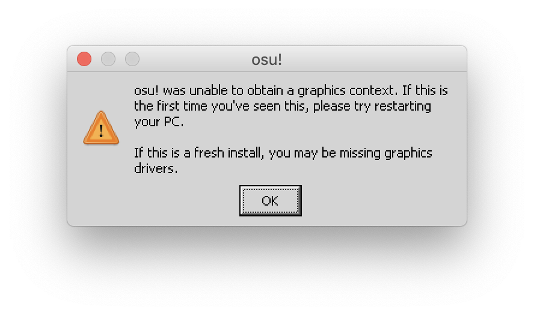
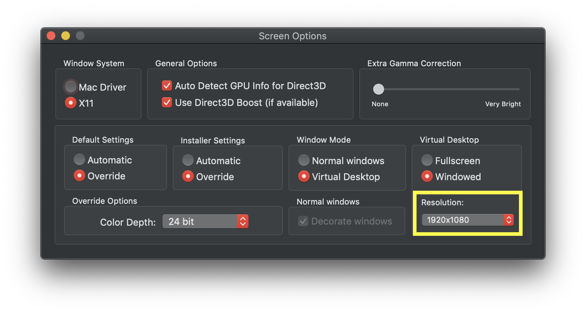

osu! was unable to obtain a graphics context¶
Behaviour¶
osu! crashes on startup, displaying an error message that says osu! was unable to obtain a graphics context.
Cause¶
This usually occurs because a user enabled Compatibility Mode in osu! settings, or changed to a screen resolution that Wine couldn’t handle.
Wine doesn’t support Compatibility Mode (aka osu!fallback) since it relies on OpenGL, whereas standard osu! uses DirectX. If you look in the logs, you may notice that osu! will be unable to find an OpenGL file.
Note
If you need to use Compatibility Mode, you can try switching to the X11 driver, though in our own testing this made no observeable difference.
Resolution¶
Find your user profile/configuration file.
Locate where
osu!.app(your Wineskin) is installedRight click on it and select
Show Package ContentsYou should now see three files/folders:
Contents,drive_candWineskin. Clickdrive_c.From here, click
osu!.From here, locate
osu!.yourcomputername.cfgand open this file in a plain text editor such as TextEdit.
For example, my configuration file is osu!.Adrian.cfg and it looks like this:

Tip
The default name for this file is usually osu!.Apple.cfg
Note
Don’t get confused with osu!.cfg which is a completely different and much smaller configuration file.
Danger
Heed the warning and don’t share this configuration file with anyone else, not even us. It contains hashed versions of your passwords.
You’ll need to either delete or change a number of screen resolution options if you don’t know which is causing osu! to crash. If you know what option is breaking osu!, then you only need to modify/delete that specific option, as listed below.
Compatibility Mode¶
If you enabled Compatibility Mode (aka osu!fallback) and now osu! won’t start, find the CompatibilityContext option.
Tip
Use Command + F in TextEdit to quickly search for CompatibilityContext.
If you did enable it, it would look like this:
CompatibilityContext = 1
Change this to:
CompatibilityContext = 0
Then, start osu!
If you can’t find CompatibilityContext¶
Add the following line to the bottom of osu!.yourcomputername.cfg:
CompatibilityContext = 0
Then, start osu!
Screen Resolution¶
If you changed the screen resolution to something a bit weird, find these options:
HeightWidthHeightFullscreenWidthFullscreen
Tip
Use Command + F in TextEdit to quickly search for these options.
Then, change the values accordingly to your last known previous settings, or to the recommended values as shown below. You can also delete them to have osu! initialise everything for you again.
Preferably:
HeightandWidthshould be Wine’s specified screen resolution (or otherwise, a standard screen resolution like1920x1080)HeightFullscreenandWidthFullscreenshould be your computer’s effective/scaled screen resolution.
Find Wine's specified screen resolution
If you’re using Virtual Desktop on the X11 driver and need to modify Height and Width:

Locate where
osu!.app(your Wineskin) is installedRight click on it and select
Show Package ContentsYou should now see three files/folders:
Contents,drive_candWineskin. ClickWineskin.Click Set Screen Options
Locate the Screen Resolution dropdown as shown below - what it is set to is Wine’s specified screen resolution:
In this example it is 1920x1080. Therefore, Width = 1920 and Height = 1080.
Find your fullscreen resolution
To find osu!'s fullscreen resolution, you need to know your current scaled resolution for the monitor you're playing osu! on.
Your scaled screen resolution on this monitor is
x
where:
- Width =
- Height =
Now, replace the corresponding Height and Width values in osu!.yourcomputername.cfg with those displayed above.
If that didn’t work¶
There could be something else going on here, and performing basic troubleshooting should help you get to the bottom of it.
If you’re not sure what’s going on here, copy any osu! crash logs as well as generating a report with osu!macOS Agent, and let us know on the forums.
Note
Random side note that may or may not be useful to you: (i didn’t have anywhere else to put it)
Don’t use a .NET version that’s too new (.NET 4.0 is the highest slc’s Wineskin will support)